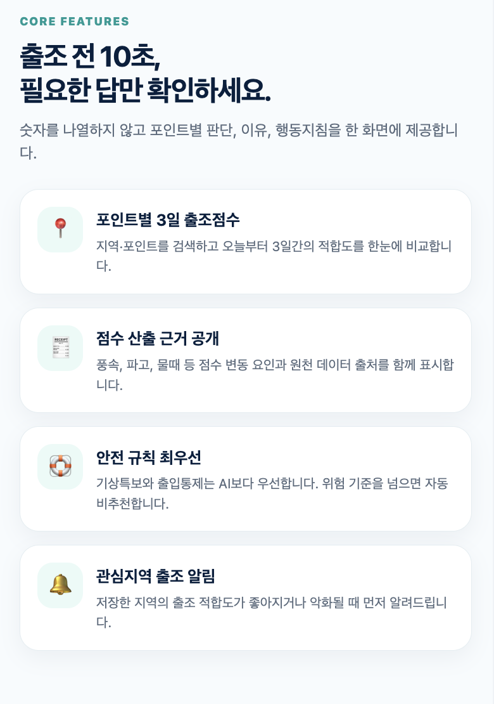
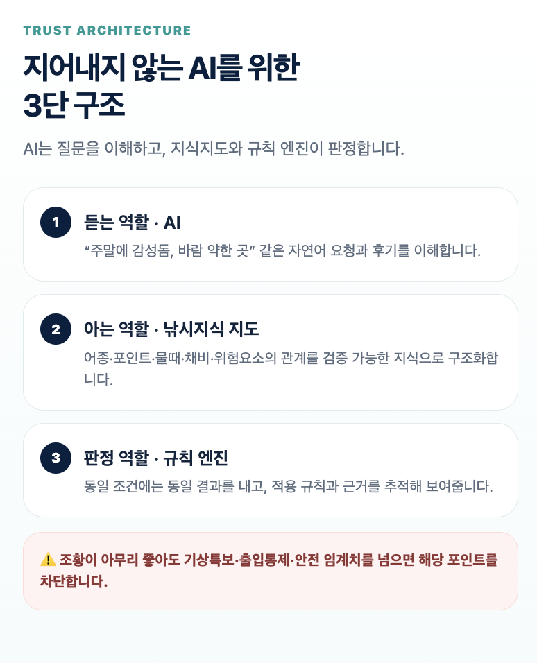
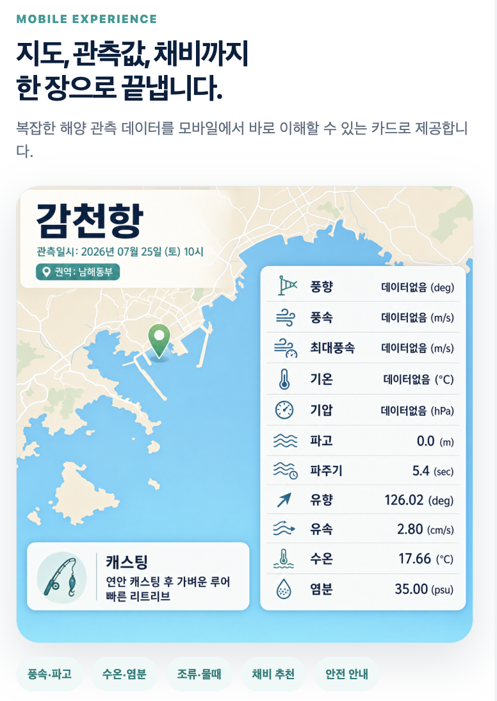
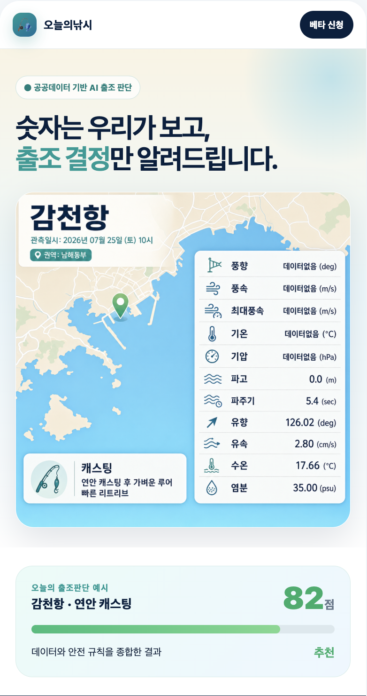
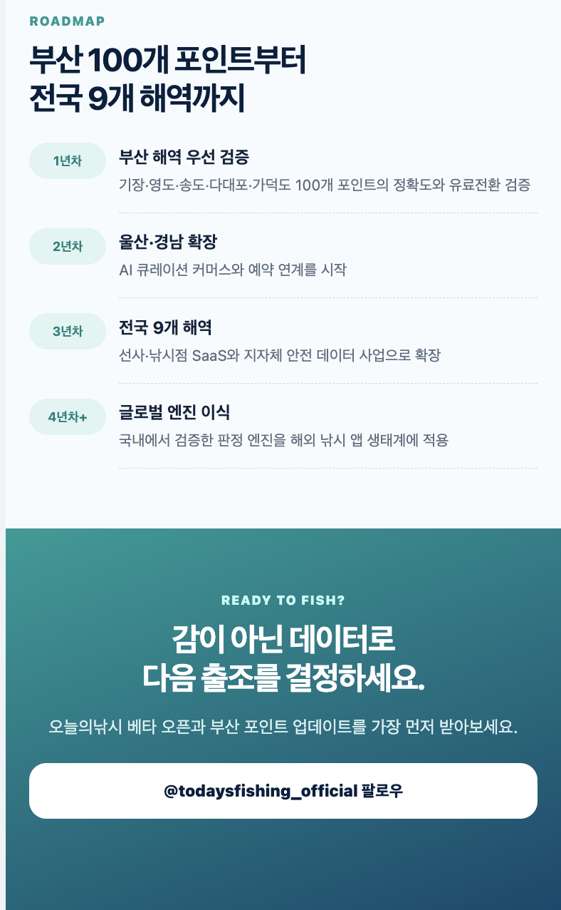

기상청·해양조사원·공공데이터포털에 흩어진 관측값을 하나의 판정으로 번역합니다. 조황은 감이 아니라, 검증 가능한 근거로 말합니다.
기관별 데이터와 주관적인 조황 후기를 비교해도, 결국 "오늘 이 포인트에 가도 되는가"는 스스로 판단해야 합니다.
기상청·KHOA·공공데이터포털을 일일이 비교해야 오늘의 조건을 겨우 그려볼 수 있습니다.
시점과 출처가 불분명한 후기와 과장된 정보가 뒤섞여, 어디까지 믿어야 할지 알 수 없습니다.
파고·풍속·출입통제를 따로 보면, 겹쳐졌을 때 커지는 위험을 놓칠 수 있습니다.
숫자를 나열하지 않고 포인트별 판단, 이유, 행동지침을 한 화면에 제공합니다.

지역·포인트를 검색하고 오늘부터 3일간의 적합도를 한눈에 비교합니다.
풍속, 파고, 물때 등 점수 변동 요인과 원천 데이터 출처를 함께 표시합니다.
기상특보와 출입통제는 AI보다 우선합니다. 위험 기준을 넘으면 자동으로 비추천합니다.
저장한 지역의 출조 적합도가 좋아지거나 악화될 때 먼저 알려드립니다.
AI는 질문을 이해하고, 지식지도와 규칙 엔진이 판정합니다. 같은 조건이면 언제나 같은 답이 나옵니다.
"주말에 감성돔, 바람 약한 곳" 같은 자연어 요청과 조황 후기를 이해합니다. 판정에는 일절 관여하지 않습니다.
어종·포인트·물때·채비·위험요소의 관계를 검증 가능한 지식으로 구조화합니다.
동일 조건에는 동일 결과를 내고, 적용 규칙과 근거를 추적해 보여줍니다. (Graph RAG)



복잡한 해양 관측 데이터를 모바일에서 바로 이해할 수 있는 카드로 제공합니다. 풍향·파고 같은 원시 수치부터 캐스팅 방법까지, 스크롤 없이 한 화면에서 확인하세요.
부산 갯바위부터 전국 9개 해역까지, 오늘의낚시가 매일 자동 발행하는 브리핑 카드입니다.
연차별로 검증 지역을 넓히며, 국내에서 검증한 판정 엔진을 해외로 이식합니다.
기장·영도·송도·다대포·가덕도 100개 포인트의 정확도와 유료전환을 검증합니다.
AI 큐레이션 커머스와 예약 연계를 시작합니다.
선사·낚시점 SaaS와 지자체 안전 데이터 사업으로 확장합니다.
국내에서 검증한 판정 엔진을 해외 낚시 앱 생태계에 적용합니다.

오늘의낚시 베타 오픈과 부산 포인트 업데이트를 가장 먼저 받아보세요.